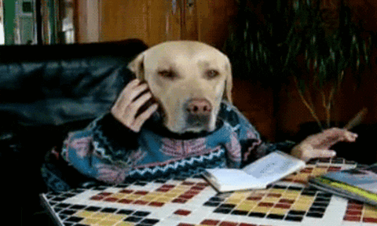

PARA CONTACTARTE CON ALGÚN RESCATISTA
- MARIELLE +54 9 297 1234567
- MARCELA +54 9 297 1234567
- NOELIA +54 9 297 1234567
- MABEL +54 9 297 1234567
- CRISTIAN +54 9 297 1234567

PARA CONTACTARTE CON EL ADMINISTRADOR DE LA PAGINA
Por consultas o sugerencias podés enviarnos un mail a familiaparatodos@gmail.com